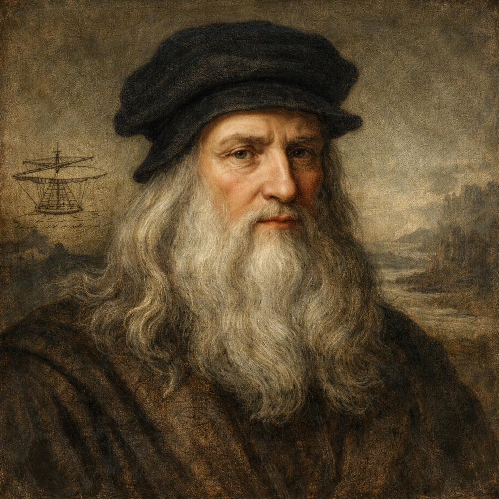

Leonardo da Vinci
Apr 15, 1452 - May 2, 1519 · Italian

Leonardo da Vinci (1452–1519) was an Italian Renaissance master whose work embodies the union of art and science. A painter, inventor, anatomist, engineer, and visionary thinker, Leonardo approached creativity with relentless curiosity and intellectual rigor. Trained in Florence under Andrea del Verrocchio, he developed groundbreaking techniques in composition, anatomy, and light, most notably through his use of sfumato, which created soft transitions between tones and gave his figures remarkable lifelike presence. His careful observation of nature, combined with an extraordinary sensitivity to human expression, allowed him to depict not only physical form but also subtle emotion and psychological complexity.
His most celebrated works, including The Last Supper and Mona Lisa, are renowned for their psychological depth, balance, and innovative perspective. In The Last Supper, Leonardo masterfully arranged the apostles in dynamic groups, capturing the dramatic moment of Christ’s announcement with unprecedented realism and emotional tension. The enigmatic smile of the Mona Lisa and the atmospheric landscape behind her demonstrate his refined understanding of perspective, optics, and the interplay between light and shadow. Leonardo’s compositions often reveal meticulous planning and experimentation, reflecting his belief that painting was a science rooted in mathematics and observation.
Beyond painting, Leonardo filled countless notebooks with detailed studies of the human body, mechanical inventions, hydraulic systems, architecture, and the mechanics of flight—revealing a mind centuries ahead of its time. His anatomical drawings, based on dissections he conducted himself, remain admired for their precision and insight. Designs for flying machines, armored vehicles, and complex engineering systems demonstrate both imaginative daring and technical sophistication. Although many of his inventions were never realized during his lifetime, they illustrate the breadth of his intellect and his desire to understand the principles governing the natural world.
Leonardo spent his later years in France under the patronage of King Francis I, continuing his studies and refining his ideas until his death in 1519. His legacy endures not only through his masterpieces but through his enduring model of interdisciplinary genius and humanistic inquiry. As a symbol of the Renaissance ideal, Leonardo represents the boundless potential of human curiosity, creativity, and the pursuit of knowledge across disciplines.